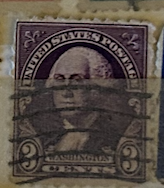
| SOURCE | TITLE| IMAGE MATCH | click to source page |
| eBay | Vintage Rare 1932 US 3 Cent George Washington Stamp | Purple / Violet #S | eBay | 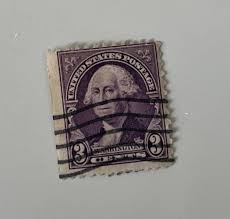 |
| HipStamp | United States Sc # 720 used (RC) | United States, General Issue Stamp / HipStamp | 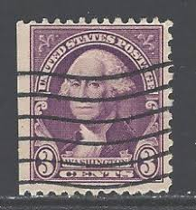 |
| eBay | 1932 Rare Used 3 Cents Washington Cutting Error | eBay | 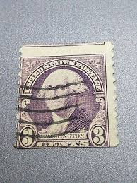 |
| eBay | Rare George Washington 3 Cent Stamp Purple/ Violet Mint Unused Vintage | eBay | 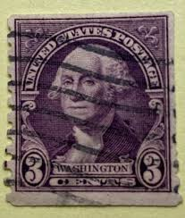 |
| eBay UK | Rare 1932 US 3 Cent George Washington Stamp Purple / Violet | eBay UK | 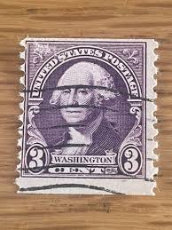 |
| eBay | 3 Cent Washington Used US Stamps (1901-Now) for sale | eBay | 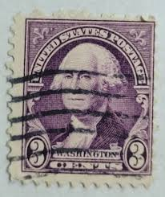 |
| eBay | 1932 US Stamp 3 cent Washington Scott# 720 used | eBay | 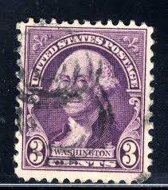 |
| eBay | Vintage Rare 1932 US 3 Cent George Washington Stamp | Purple / Violet | eBay | 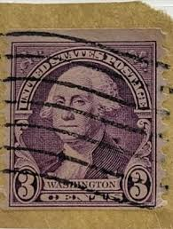 |
| eBay | Pennsylvania Used Used US Stamps (1901-Now) for sale | eBay | 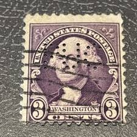 |
| Etsy | Rare 1932 Purple Washington Stamp. - Etsy | 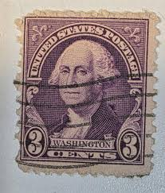 |
| eBay | 3 Cent Politicians Postage Stamps for sale | eBay | 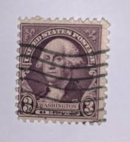 |
| Mercari | Old stamps, George Washington error rare | Mercari | 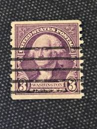 |
| eBay | Las mejores ofertas en 3 cent Washington Violeta estampillas de EE. UU. usadas (1901-presente) | eBay | 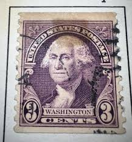 |
| alawangroup.com | Stamp rare purple 3 cent Washington stamp | 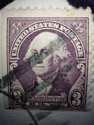 |
| eBay | 3 Cent Washington Violet Used US Stamps (1901-Now) for sale | eBay | 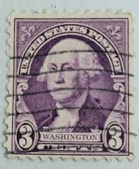 |
| HipStamp | US #720 George Washington; Used | United States, General Issue Stamp / HipStamp | 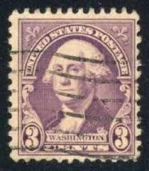 |
| OnlineStampShop | Used U.S. Stamps :: #498-999 Used :: # 721 3c George Washington Coil Single 1932 Used | 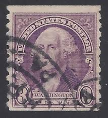 |
| HipStamp | 720 Used Deep Violet George Washington | United States, General Issue Stamp / HipStamp | 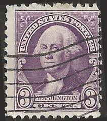 |
| allnumis.com | 3 Cents 1932 - George Washington, US Presidents - George Washington - United States of America - Stamp - 1806 | 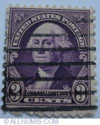 |
| HipStamp | 720 Used Violet George Washington XF+ | United States, General Issue Stamp / HipStamp | 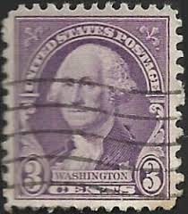 |
| Vintage Rare US George Washington 3 Cents Stamp, Used, #18 - Etsy | Stamp, George washington, Valentine | 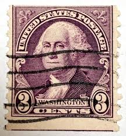 | |
| Stamps : r/stampcollecting | 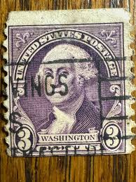 | |
| USPhila.com | Prices of US Stamps Scott Catalog #389 - 1911 3c Washington Coil | 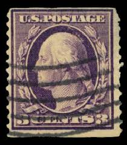 |
| Alamy | Postage stamp us usa washington president 1732 1932 used philately hi-res stock photography and images - Alamy | 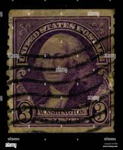 |
| Stamp Auction Network | Robert A. Siegel Auction Galleries, Inc. Sale - 1096 Page 73 | 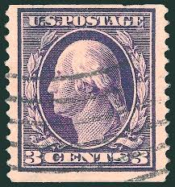 |
| HipStamp | 720 3 cent Washington, Deep Violet Stamp used AVG | United States, General Issue Stamp / HipStamp | 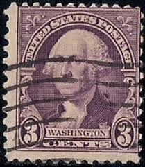 |
| Stamp Auction | Robert A. Siegel Auction Galleries, Inc. Sale - 1011 Page 58 | 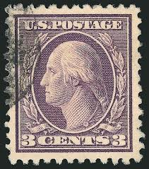 |
| Federal University of Agriculture, Abeokuta (FUNAAB) | GEORGE WASHINGTON STAMP 3 CENT | 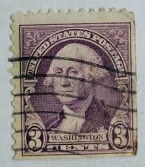 |
| Stamp Auction | Daniel F. Kelleher Auctions, LLC Sale - 795 Page 35 | 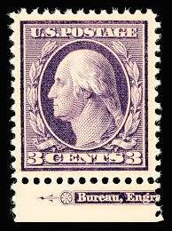 |
| Stamp Auction Network | Daniel F. Kelleher Auctions, LLC Sale - 655 Page 22 | 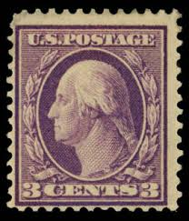 |
| HipStamp | 720 Used Deep Violet George Washington | United States, General Issue Stamp / HipStamp | 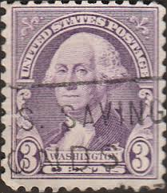 |
| USPhila.com | US Stamps Price Scott Catalog #376: 3c 1910 Washington Perf 12 | 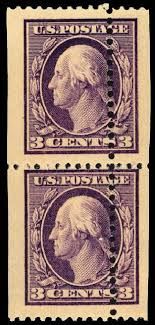 |
| HipStamp | 721 3 cents Washington D Violet coil Stamp used EGRADED XF 90 XXF | United States, General Issue Stamp / HipStamp | 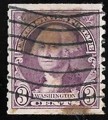 |
| USPhila.com | Costs of US Stamps Scott Catalog # 333 - 3c 1908 Washington | 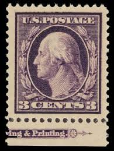 |
| USPhila.com | Cost of US Stamp Scott 501 - 3c 1917 Washington Perf 11 | 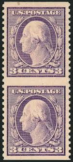 |
| HipStamp | 720 3 cent Washington, Deep Violet Stamp used F | United States, General Issue Stamp / HipStamp | 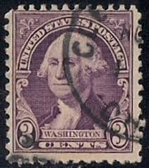 |
| USPhila.com | Price of US Stamp Scott #345 - 3c 1909 Washington Imperf | 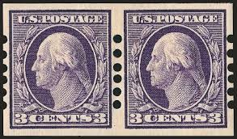 |
| stampsrhistory.com | Wash Franklin - StampsRhistory.com | 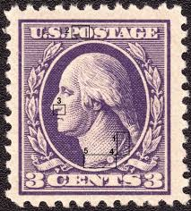 |
| PicClick | VINTAGE US 3 Cent George Washington Stamp | Purple / Violet $29.99 - PicClick | 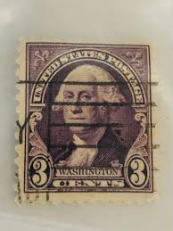 |
| Stamp Auction Network | Shreves Philatelic Galleries, Inc. Sale - 45 Page 31 | 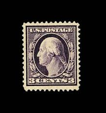 |
| What are your thoughts on these stamps. Pics are behind plastic protectors | 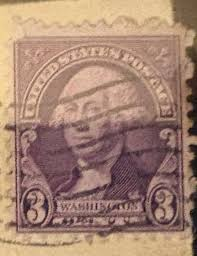 | |
| USPhila.com | Price of US Stamp Scott #394: 3c 1911 Washington Coil | 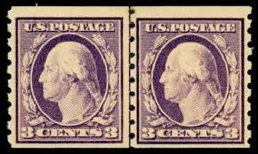 |
| Nerdable | 5 Rare George Washington Stamps | 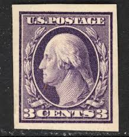 |
| Etsy | 3 Cent Washington - Etsy | 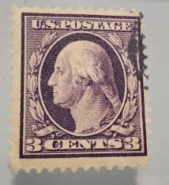 |
| dobrokar.cz | Vintage George Washington Purple 3 cent Stamp, Stamps, Mail, Paper | 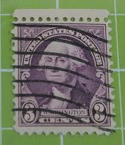 |
| Linns Stamp News | Harmer's California sale features both valuable sheets and covers | 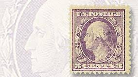 |
| PicClick UK | 1932 US GEORGE Washington 9 Cent orange Stamps. pre-franked Concord NH £18.00 - PicClick UK | 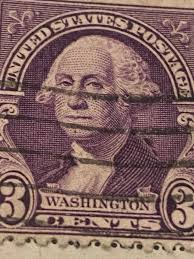 |
| Mystic Stamp | 464 - 1916 3c Washington, Violet, Unwatermarked, Type I, Perf. 10 - Mystic Stamp Company | 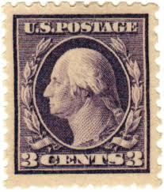 |
| Gumtree Australia | cents stamps | Antiques, Art & Collectables | Gumtree Australia Local Classifieds | 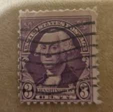 |
| TikTok | Wheres George Dollar Bill Stamp | TikTok | |
| eBay | 1932 Stamp #721 George Washington Used | eBay | |
| eBay | Rare 1932 George Washington 3 Cent Deep Purple / Violet Postage Stamp Cancelled | eBay | |
| eBay | Rare George Washington 3 Cent Stamp Purple/ Violet C19 | eBay | |
| USPhila.com | US Stamp Price Scott # 501: 1917 3c Washington Perf 11 | |
| eBay | Rare 1932 US 3 Cent George Washington Stamp Purple / Violet w/Black Eyes | eBay | |
| Rasdale Stamp Company | Public Auction #459 | |
| Stamp Auction | Shreves Philatelic Galleries, Inc. Sale - 45 Page 38 | |
| eBay | Rare 1932 US 3 Cent George Washington Stamp Purple / Violet w/Black Eyes LOOK | eBay | |
| eBay | Rare George Washington 3 Cent Stamp Purple/ Violet Mint Unused Vintage | eBay |